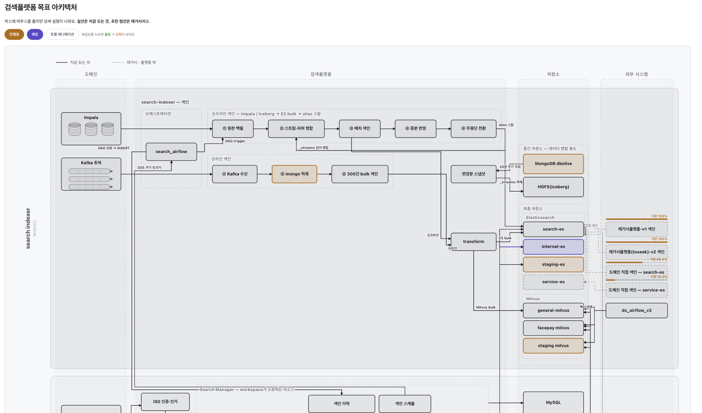

카카오뱅크 서버 개발자 — 뱅킹서버개발2팀
김은미
토스(비바리퍼블리카)
ML Search Platform Team Lead
카카오에서 선물하기 모놀리식을 MSA로 전환했고, 다음에서는 6개 도메인 서비스를 0에서 1까지 만들어 운영했습니다. 지금은 토스에서 팀을 이끌며 여러 서비스가 함께 쓰는 검색 플랫폼을 수억 건 규모로 설계·운영하고, 팀의 개발 프로세스에 AI를 통합하는 일을 하고 있습니다.
모놀리스 점진적 이관
레거시 개선 · MSA 전환
대규모 트래픽 0 → 1
대용량 트래픽 설계 · 운영
AI 개발 프로세스 통합
AI 생산성 향상 · 결과 검증
제한된 환경에서도 되는 방법을 먼저 찾고, 업무 경계는 따지지 않고 필요하면 손들고 맡습니다
주도성
자동화 · 플랫폼화
테스트 / 배포 환경 구축
할 수 있는 것과 없는 것을 쪼개서 해결
컨벤션과 가이드로 해결
되돌릴 수 있는 설계
수치와 시각 자료로 근거를 만들어 설득하고, 개인의 노력에 기대는 대신 시스템으로 남기고 있어요
의사결정
팀 내 싱크

팀 히스토리 — 여러 팀의 기록을 한곳으로
개발 — 문서로 돌아오는 루프